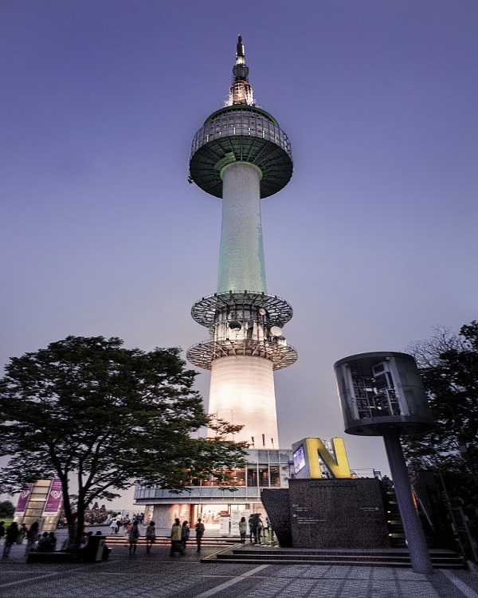

도심 속 아일랜드 타워는....
1969년 이후
구름과 맞닿은 곳에서 남산의 자연과 21세기 첨단기술이 만들어낸 절묘한 조화, 여유로운 휴식과 다양한 문화가 함께하는 서울의 복합문화공간 JR타워 입니다.
서울의 중심, 서울의 상징이자 서울의 가장 아름다운 모습을 한눈에 내려다 볼 수 있는 가장 높은 곳 JR타워는 1969년 TV와 라디오 방송을 수도권에 송출하기 위해 한국 최초의 종합 전파탑으로 세워졌습니다.
타워의 전파탑에는 KBS, MBC, SBS TV와 FM 송신안테나를 비롯하여 PBC, TBS, CBS, BBS FM 송신 안테나 등이 설치되어 있으며, 전국 가청 인구의 48%가 JR타워 전파탑을 통하여 방송을 시청하고 있습니다.
JR타워는 1980년, 일반인에게 공개된 이후 남산의 살아있는 자연과 함께 서울시민의 휴식공간이자 외국인의 관광명소로 자리 잡았습니다.
최신LED기술의 조명으로 시시각각 색과 패턴이 변하는 '빛의 예술'과의 어우러짐 속에서 다양한 미디어 아트와 함께 색다른 문화예술을 경험하실 수 있습니다.서울의 대표적인 복합문화공간으로 새롭게 태어난 JR타워, 자랑스런 서울의 랜드마크가 될 것입니다.

n.GRILL에는....
한식
한국식 요리의 총칭. 한식이라고 부르며, 주로 한국의 전통식 요리를 뜻합니다. 비빔밥, 불고기, 백반 정식 등의 메뉴가있습니다.
중식
중국식 요리의 총칭. 중식이라고 부르며, 주로 중국 요리를 뜻합니다. 짜장면, 짬뽕, 탕수육 등의 메뉴가있습니다.
일식
일본식 요리의 총칭. 일식이라고 부르며, 주로 일본 요리를 뜻합니다. 스시, 전골, 고기요리 등의 메뉴가있습니다.
양식
서양식 요리의 총칭. 양식이라고 부르며, 주로 서양 요리를 뜻합니다. 파스타, 햄버거, 센드위치 등의 메뉴가있습니다.
오시는 길...
지도
02,03,05번 버스를 이용 시 N서울타워 하차
N서울타워 7층 n'GRILL
404
Not Found